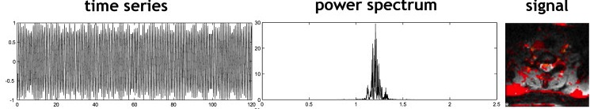

Contents
- Introduction
- User Guide
PNM: Physiological Noise Modelling
PNM is a tool used in conjunction with the GLM (via FEAT) that can be used to model (or "regress out") the effects of physiological noise in functional MRI data. That is, it creates EVs (regressors) that can be used to model the physiological noise within the GLM, alongside other stimulus-related regressors. The regressors are created using physiological recordings, such as pulse-ox and respiratory bellows, and model the MRI signal via a series of sinusoidal basis functions (like RETROICOR).
This tool requires physiological recordings to be taken during the functional MRI session.
- We strongly recommend also recording scanner triggers with the other physiological recordings as this can be vital in getting the timing accurate.
- Physiological noise modelling is very important for studies looking at the brainstem, spinal cord, and other structures in the inferior parts of the brain, although there is some benefit in any study.
Referencing
If you use PNM in your research, please make sure that you reference at least the first of the articles listed below, and ideally other appropriate ones from the list.
Brooks JC, Beckmann CF, Miller KL, Wise RG, Porro CA, Tracey I, Jenkinson M. Physiological noise modelling for spinal functional magnetic resonance imaging studies. Neuroimage, 39(2):680-92, 2008.
Harvey AK, Pattinson KT, Brooks JC, Mayhew SD, Jenkinson M, Wise RG. Brainstem functional magnetic resonance imaging: disentangling signal from physiological noise. J Magn Reson Imaging. 28(6):1337-44, 2008.
Birn RM, Diamond JB, Smith MA, Bandettini PA. Separating respiratory-variation-related fluctuations from neuronal-activity-related fluctuations in fMRI. Neuroimage, 31(4):1536-48, 2006.
Glover GH, Li TQ, Ress D. Image-based method for retrospective correction of physiological motion effects in fMRI: RETROICOR. Magn Reson Med., 44(1):162-7, 2000.
Shmueli K, van Gelderen P, de Zwart JA, Horovitz SG, Fukunaga M, Jansma JM, Duyn JH. Low-frequency fluctuations in the cardiac rate as a source of variance in the resting-state fMRI BOLD signal. Neuroimage, 38(2):306-20, 2007.
Chang C, Cunningham JP, Glover GH. Influence of heart rate on the BOLD signal: the cardiac response function. Neuroimage, 44(3):857-69, 2009.
Cohen-Adad J, Gauthier CJ, Brooks JC, Slessarev M, Han J, Fisher JA, Rossignol S, Hoge RD. BOLD signal responses to controlled hypercapnia in human spinal cord. Neuroimage, 50(3):1074-84, 2010.